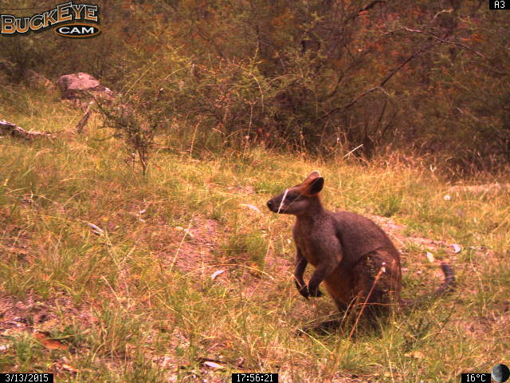
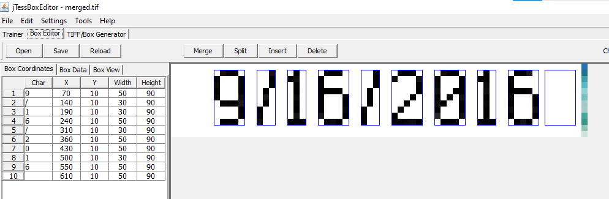

Background
Recently I came across an interesting issue. My University runs a field station at a rural property called Newholme where a grid of camera traps was set up a few years back. Cameras are solar-powered and form a mesh network where photos are relayed from one camera to another and finally to the base station located at the station building. Unfortunately, due to a firmware bug, for the first few years, the EXIF data was wiped from each photo as it was relayed so we could only get the date and time when the file was saved on the base station, which could be minutes or days after it was taken. Original metadata was embedded in the picture itself as text, like this:

The manufacturer (Buckeye) eventually fixed this issue and after a firmware update photos now have metadata embedded in EXIF fields. However, to use all the data from before the update, we needed to assign date and time to each picture. It was done manually for some small subset but it is a tedious process prone to errors, so I decided to try and automate it.
OCR and the tesseract package
I have used OCR (optical character recognition) software before and I thought there is probably an R package that can read the text and sure enough - a powerful, open-source OCR engine tesseract is availabe in R through a package tesseract.
We will need a couple of libraries first:
library(magick)
library(tesseract)
library(tidyverse)To help tesseract read our data, we can clip interesting parts from the photo. In this case, I want to read the date and time so we can clip that part of the image. We can use code:
# import photo
image_read(photo1)%>%
# crop date field
image_crop("68x12+0+468")Where first two values (68x12) represent the size of the cropped field, and the second two (+0+468) represent the position of the top left corner of that field. As we can see, that gives us desired part of the photo:
Tesseract is not dealing well with inverted images so we need to do some more preprocessing before we can run the OCR engine. We will invert the picture, then we will enlarge it 10 times (photo is only 640x480 px and the original digits are only 9 pixels high), increase brightness to get rid of the noise and increase contrast to make it easier to read for our engine. This required a little bit of trial and error to get it right, but here is the result:
image_read(photo1)%>%
image_negate()%>%
image_crop("68x12+0+468")%>%
image_scale("680x120") %>%
image_modulate(brightness = 120)%>%
image_contrast(sharpen = 100)This is already looking better. The narrow strip on the right is there because the actual width of the field changes depending on the number of digits and otherwise would clip the last digit on some long dates. We will deal with it later.
Now we can run the OCR engine and see what we get.
#import and preprocess the image
date <- image_read(photo1)%>%
image_negate()%>%
image_crop("68x12+0+468")%>%
image_scale("680x120") %>%
image_modulate(brightness = 120)%>%
image_contrast(sharpen = 100)
#read the text
ocr(date)Which gives us >“3/13/2415 |”
As you can see, tesseract wrongly identified 0 as 4. For other photos, the results varied from correct or almost correct to a random sequence of letters and digits that didn’t make any sense. The “pixelated” font that the camera is using is making it hard for the engine to read some digits correctly. We need to dig deeper and make use of the tesseract training mechanism.
To do that we can prepare a training set consisting of our preprocessed crops, load them into a program, generate a box for each digit and then assign it a correct value. We can generate our training dataset using a simple loop to crop date and time fields from each photo, preprocess it and save each one as a new file:
#create a list of training files
files <- list.files(path="./Datasets/02a", full.names=TRUE)
#using the list of images
for (row in 1:NROW(files)) {
#display iteration to see progress
print(row)
# read the i-th image and invert it
pic <- image_negate(image_read(files[row]))
# extract parts of the image to read
date <- image_crop(pic, "68x12+0+468")%>%
image_scale("680x120") %>%
image_modulate(brightness = 140)%>%
image_contrast(sharpen = 100)%>%
image_median(radius = 5)%>%
time <- image_crop(pic, "50x12+296+468")%>%
image_scale("500x120") %>%
image_modulate(brightness = 140)%>%
image_contrast(sharpen = 100)%>%
image_median(radius = 5)%>%
image_quantize(max=2)
#write output for training
newfile <- file.path(paste0("./Datasets/Training/date_", row, ".jpg"))
image_write(date, newfile, quality=100)
newfile <- file.path(paste0("./Datasets/Training/time_", row, ".jpg"))
image_write(time, newfile, quality=100)
}Now we can move to software for tesseract training (it can be done from the terminal as well, but since I had no prior experience with tesseract, I found this software to be easier to use). We need to download jTessBoxEditor and follow the instructions. Combine our training files into a multi-page TIFF (Tools->Merge TIFF), then we go to the Trainer tab, select our input file (the newly generated TIFF) and select Generate Box File from the drop-down list. It will then generate a box around each digit and assign values, best it can. We can now move to the Box Editor tab, load our newly generated training set and go through the boxes and edit them to fix values that were wrongly assigned:

I did that for a sample of 142 dates and times (around 2000 characters in total). We then save our training data, go back to the trainer tab and use it for the actual training, selecting functions: Train with existing box, then Shape Clustering and finally Dictionary. This results in a new “language” (in our case simply a font) that can be used as a parameter in the OCR engine.
So we need to set up this new engine by assigning a language (I called it “buc”). We can further help tesseract by limiting the symbols it will look for to just digits, “/” and “:”” since there are no other characters in the date and time fields:
numbers <- tesseract("buc", datapath = "./Datasets/train", options = list(tessedit_char_whitelist = "0123456789:/"))
ocr(test, engine = numbers)Running this on our dataset gives much better results, but for whatever reason, the engine is still struggling with some digits, particularly 6, 8 and 0. Even though these are generated by the camera trap and are identical, the same digit is sometimes read correctly, and sometimes not, with 8 being misread every single time as either 6 or 0. I spent hours trying to tweak the training data and even though it met all the guidelines (more than 20 instances of every digit etc.) I could never get it to work. Not only that, I couldn’t find a good reason for it not working sometimes but then working well on the same digits, just in different order.
I then decided to see if the camera is using an existing font as jTessBoxEditor has an option to generate training files using a known font and it was recommended in the tesseract manual as the best way to train the data. I took a sample date and uploaded it to online font recognition websites like WhatTheFont! and What Font Is, found some similar looking (but not identical) fonts and tried that, but it didn’t make a huge difference and in some cases made it worse. So finally I came up with an idea to create a custom font that would be as close as possible to the one used by Buckeye and use that for training. I found a very helpful website calligraphr which allows you to create a font from your handwriting. You select the symbols you want to use, then you download an automatically generated template to fill with your handwriting (in my case - paste in preprocessed digits) and upload it back to the website which converts it into a font:
You then get a custom generated font that you can install on your computer (I recommend using “install for all users”, you will also need to restart jTessBoxEditor). You then need to create a text file with a sample text - in my case, it was just 0123456789/: repeated 20 times - and use the TIFF/Box Generator tab to generate a new training file:
Then you need to repeat the training process. Do not generate new boxes (boxes with correct characters are generated by TIFF/Box Generator), go straight to training using Train with existing box , Shape Clustering and Dictionary and the result is your new “language” that can be then used as a parameter in the tesseract() function. Great thing is that it takes a couple of minutes and not hours like in the previous method.
Now, using the custom engine, I was getting 100% accuracy (I checked it on 2000 sample photos and there was not a single error) - finally! We can now move to a final code to run through the dataset, extract dates and time and write them into a .csv file. Our photos are already arranged into folders by camera and species so we can use the file path to easily extract these values afterwards.
The last thing to mention is that, like in my first example, there are some narrow strips on some crops that are read as digits. Luckily, they are always separated by a space, so we can add a line to remove that space and everything after it from our read values. We also need to get rid of the new line symbol [] at the end of each record which tesseract adds automatically - we will do with another line of code.
Final code
This is what the final code looks like:
### Extracting metadata from camera trap images
# load required libraries
library(magick)
library(tesseract)
# building a tesseract engine
# using a pre-trained dataset "buckeye" (stored in the folder "font")
buckeye <- tesseract("buckeye", datapath = "./font")
# generate a list of files - only .jpg as another format will cause error
files <- list.files(path="./Data", full.names=TRUE, recursive = TRUE, pattern = "jpg")
#loop for extracting date and time
#initialise variables
no <- NA
t <- NA
d <- NA
#starting from the first file and moving through the list of images
for (row in 1:NROW(files)) {
#display progress
message(paste0("analysing photo ", row, " out of ", NROW(files)))
### actual OCR routine
# read the n-th image and invert it
pic <- image_negate(image_read(files[row]))
# extract parts of the image to read and preprocess for OCR
date <- image_crop(pic, "68x12+0+468")%>%
image_scale("680x120") %>%
image_modulate(brightness = 120)%>%
image_contrast(sharpen = 100)
time <- image_crop(pic, "50x12+296+468")%>%
image_scale("500x120") %>%
image_modulate(brightness = 120)%>%
image_contrast(sharpen = 100)
#read them and write into n-th row of respective variable
no[row] <- row
d[row] <- ocr(date, engine = buckeye)
t[row] <- ocr(time, engine = buckeye)
# move to the next file
}
# cleaning up the data
# remove artefacts and page breaks
t <- sub(" .*", "", t)
t <- sub("[\n]", "", t)
d <- sub(" .*", "\n", d)
d <- sub("[\n]", "", d)
#create a dataframe with the read values
output <- data.frame(no = no,
filename = files,
date <- d,
time <- t)
#write a .csv file
write.csv(output, "extracted_date_and_time.csv")
You can now put all the photos to be tagged into the Data folder and execute the code. Depending on how many photos you have, how large your photos are and how fast your computer is it can take from minutes to hours. I was getting around 200 photos per minute on my 7 years old laptop, while my supervisor was going through more than 1000 photos per minute on his much newer and faster Mac. Still, I recommend running it in smaller chunks, that way in case of an error you are not losing 10h of processing.
I intentionally didn’t want to do any editing of the existing photos (disk space, maintaining 2 copies etc) and instead decided to save the results as a separate .csv file. In case you want to rename your photos and write this metadata into the picture itself, I recommend you read a very informative post by John Vanek where he details how to manipulate EXIF data. Luckily, he was able to use the default tesseract engine with great success and if your camera has better resolution and uses a more standard font, you might not need to worry about training the engine at all.